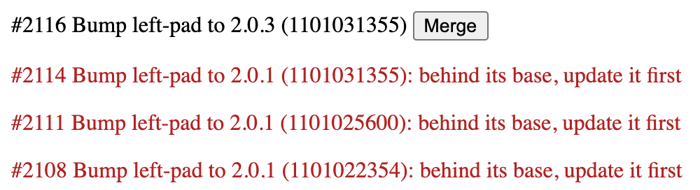
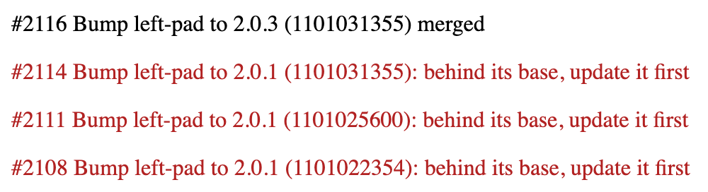

Information and controls · part 0
LO
(and behold the generic agent approach RESTing patiently since 2000)
Our team can't change the settings of the GitHub repository we work in, so we put our own controls in front of it, to make AI tools do what we want, not merely what they can. A two-letter accident, a dashboard fragment and a web browser set up the series.
Lo and behold, 1969
At 10:30 in the evening on 29 October 1969, Charley Kline at UCLA tried to log in to a computer at the Stanford Research Institute. He typed L, then O, and the system crashed.
Hence, the first message on the Internet was "lo", as in "lo and behold!"
Leonard Kleinrock, "The First Words on the Internet"
Rules we can't set
Our team merges a steady stream of dependency bumps in a GitHub repository we don't administer. We have a rule: never merge a branch that's behind its base; update it first. GitHub has a setting for exactly that, but it belongs to the people who own the repository, and they won't switch it on. So the rule is ours to keep, in our own tools.
More and more of those tools are AI: assistants that write our code, agents that act for us. Left alone, they'll do whatever GitHub lets them do. We want them to do what our team allows. That's what this series is about: people putting their own controls in front of systems they don't control, so AI tools do what we want, not merely what they can.
The engine that has run the Web since the 1990s
In 2000, Roy Fielding's dissertation described the architecture that had made the Web work, and named it REST. At its centre is a uniform interface, defined by four constraints:
- identification of resources
- manipulation of resources through representations
- self-descriptive messages
- hypermedia as the engine of application state
The last one is the browser's whole trick. Every page carries its own links and forms, and the browser offers only what the page offers. That engine has run the Web since the early 1990s, across billions of pages, for browsers that know nothing about any of them.
APIs mostly left it out. By 2008, Fielding was fed up:
I am getting frustrated by the number of people calling any HTTP-based interface a REST API. […] What needs to be done to make the REST architectural style clear on the notion that hypertext is a constraint? In other words, if the engine of application state (and hence the API) is not being driven by hypertext, then it cannot be RESTful and cannot be a REST API. Period.
Roy T. Fielding, "REST APIs must be hypertext-driven", 20 October 2008
Reasoning agents are poised to benefit most from putting that engine back into APIs. An agent that reads what's allowed from each answer, as a browser does, needs no copy of anyone's rules.
Lo and behold, a dashboard fragment
AI tools are good at lo-and-behold moments. We asked an assistant for a fragment for our review dashboard: list our open bumps, and offer Merge only where our rule allows. Lo and behold:
<section id="bumps"></section>
<style> .held { color: firebrick } </style>
<script type="module">
const api = "/github/repos/JogoShugh/heart-github-test";
const get = (path) => fetch(api + path).then((answer) => answer.json());
const bumps = document.querySelector("#bumps");
for (const { number } of await get("/issues?labels=bumps&state=open")) {
const pull = await get(`/pulls/${number}`);
const compare = await get(`/compare/${pull.base.ref}...${pull.head.sha}`);
const behind = compare.behind_by > 0; // our rule, in our code
bumps.insertAdjacentHTML("beforeend", behind
? `<p class="held">#${number} ${pull.title}: behind its base, update it first</p>`
: `<p>#${number} ${pull.title} <button onclick="merge(this, ${number})">Merge</button></p>`);
}
window.merge = async (button, number) => {
const answer = await fetch(`${api}/pulls/${number}/merge`, {
method: "PUT",
headers: { "content-type": "application/json" },
body: JSON.stringify({ merge_method: "squash" }),
});
button.replaceWith(answer.ok ? "merged" : `not merged: ${(await answer.json()).message}`);
};
</script>A server in the middle
Its first draft kept a GitHub token in the browser. The team said no, so the page calls /github/... on the dashboard's own small server, which adds the token and forwards each call to GitHub unchanged (server.ts, fifteen lines). We ran it in a real browser against real pull requests. It offered Merge on #2116, which was fresh, and the merge went through. It held back #2114, #2111 and #2108, each behind its base, with the reason.


The squash merge of #2116: what the page sent
PUT /github/repos/JogoShugh/heart-github-test/pulls/2116/merge HTTP/1.1
Host: localhost:8500
Referer: http://localhost:8500/bumps.html
Content-Type: application/json
{"merge_method":"squash"}No token: the page never has one.
What our server sent on to GitHub
PUT /repos/JogoShugh/heart-github-test/pulls/2116/merge HTTP/1.1
Host: api.github.com
Authorization: Bearer <token, redacted>
Content-Type: application/json
{"merge_method":"squash"}The same request, with /github taken off the path and the team's token added. That's all the server does. (Shown from its code; the run captured what the browser sent and what came back.)
GitHub's answer, passed back unchanged
HTTP/1.1 200 OK
content-type: application/json; charset=utf-8
date: Sun, 01 Nov 2026 03:15:38 GMT
etag: W/"d6910369759a55eea12297db4a0760dc50643d01712e2f6c3ab508d05fe57c91"
server: github.com
x-accepted-github-permissions: contents=write
x-github-api-version-selected: 2022-11-28
x-github-media-type: github.v3; format=json
x-github-request-id: EF1F:1083CD:7BD611E:1A2B22DD:6AE6AED8
x-ratelimit-limit: 5000
x-ratelimit-remaining: 4941
{
"sha": "bec58f862cc3221b08437e392f6c6ac50a5ebfe2",
"merged": true,
"message": "Pull Request successfully merged"
}Headers abridged. The full exchange, and every other one in the run, is in runs/part-0-202611010315.yaml.
Level zero
One file, everything in it, made for this repository and this rule, today. Call it level zero: L0, which looks like LO on purpose. It works, and it's what AI tools write by default. They can write generic, reusable work too, but only when we guide them there.
What the fragment knows, and the browser doesn't
Now look at what the fragment had to know: four addresses built from GitHub's documentation, that merging is a PUT and what it takes, and our rule. GitHub's answer for #2114, held back for being 1 commit behind, says "mergeable_state": "clean", with 159 links and not one control.
GitHub's whole answer for #2114 (19 KB)
{
"url": "https://api.github.com/repos/JogoShugh/heart-github-test/pulls/2114",
"id": 5103931634,
"node_id": "PR_kwDOVM7WJc8AAAABMDfQ8g",
"html_url": "https://github.com/JogoShugh/heart-github-test/pull/2114",
"diff_url": "https://github.com/JogoShugh/heart-github-test/pull/2114.diff",
"patch_url": "https://github.com/JogoShugh/heart-github-test/pull/2114.patch",
"issue_url": "https://api.github.com/repos/JogoShugh/heart-github-test/issues/2114",
"commits_url": "https://api.github.com/repos/JogoShugh/heart-github-test/pulls/2114/commits",
"review_comments_url": "https://api.github.com/repos/JogoShugh/heart-github-test/pulls/2114/comments",
"review_comment_url": "https://api.github.com/repos/JogoShugh/heart-github-test/pulls/comments{/number}",
"comments_url": "https://api.github.com/repos/JogoShugh/heart-github-test/issues/2114/comments",
"statuses_url": "https://api.github.com/repos/JogoShugh/heart-github-test/statuses/55f5f1501330c81f6bc1aad50514f004bf0a39c0",
"number": 2114,
"state": "open",
"locked": false,
"title": "Bump left-pad to 2.0.1 (1101031355)",
"user": {
"login": "JogoShugh",
"id": 1863005,
"node_id": "MDQ6VXNlcjE4NjMwMDU=",
"avatar_url": "https://avatars.githubusercontent.com/u/1863005?v=4",
"gravatar_id": "",
"url": "https://api.github.com/users/JogoShugh",
"html_url": "https://github.com/JogoShugh",
"followers_url": "https://api.github.com/users/JogoShugh/followers",
"following_url": "https://api.github.com/users/JogoShugh/following{/other_user}",
"gists_url": "https://api.github.com/users/JogoShugh/gists{/gist_id}",
"starred_url": "https://api.github.com/users/JogoShugh/starred{/owner}{/repo}",
"subscriptions_url": "https://api.github.com/users/JogoShugh/subscriptions",
"organizations_url": "https://api.github.com/users/JogoShugh/orgs",
"repos_url": "https://api.github.com/users/JogoShugh/repos",
"events_url": "https://api.github.com/users/JogoShugh/events{/privacy}",
"received_events_url": "https://api.github.com/users/JogoShugh/received_events",
"type": "User",
"user_view_type": "public",
"site_admin": false
},
"body": "A Dependabot stand-in, for exhibits/allowed-now.",
"labels": [
{
"id": 12913232941,
"node_id": "LA_kwDOVM7WJc8AAAADAbBMLQ",
"url": "https://api.github.com/repos/JogoShugh/heart-github-test/labels/bumps",
"name": "bumps",
"description": null,
"color": "ededed",
"default": false,
"archived_at": null,
"archived_by": null
}
],
"milestone": null,
"active_lock_reason": null,
"created_at": "2026-11-01T03:13:59Z",
"updated_at": "2026-11-01T03:14:00Z",
"closed_at": null,
"merged_at": null,
"merge_commit_sha": "65566298f628491dffb23aef9becc97302d0cd17",
"assignee": null,
"assignees": [],
"requested_reviewers": [],
"requested_teams": [],
"head": {
"label": "JogoShugh:deps/left-pad-2.0.1-1101031355",
"ref": "deps/left-pad-2.0.1-1101031355",
"repo": {
"id": 1422841381,
"node_id": "R_kgDOVM7WJQ",
"name": "heart-github-test",
"full_name": "JogoShugh/heart-github-test",
"owner": {
"login": "JogoShugh",
"id": 1863005,
"node_id": "MDQ6VXNlcjE4NjMwMDU=",
"avatar_url": "https://avatars.githubusercontent.com/u/1863005?v=4",
"gravatar_id": "",
"url": "https://api.github.com/users/JogoShugh",
"html_url": "https://github.com/JogoShugh",
"followers_url": "https://api.github.com/users/JogoShugh/followers",
"following_url": "https://api.github.com/users/JogoShugh/following{/other_user}",
"gists_url": "https://api.github.com/users/JogoShugh/gists{/gist_id}",
"starred_url": "https://api.github.com/users/JogoShugh/starred{/owner}{/repo}",
"subscriptions_url": "https://api.github.com/users/JogoShugh/subscriptions",
"organizations_url": "https://api.github.com/users/JogoShugh/orgs",
"repos_url": "https://api.github.com/users/JogoShugh/repos",
"events_url": "https://api.github.com/users/JogoShugh/events{/privacy}",
"received_events_url": "https://api.github.com/users/JogoShugh/received_events",
"type": "User",
"user_view_type": "public",
"site_admin": false
},
"private": false,
"fork": false,
"archived": false,
"disabled": false,
"description": null,
"homepage": null,
"language": null,
"visibility": "public",
"is_template": false,
"topics": [],
"forks_count": 0,
"forks": 0,
"stargazers_count": 0,
"watchers_count": 0,
"watchers": 0,
"open_issues_count": 630,
"open_issues": 630,
"size": 840,
"default_branch": "main",
"has_issues": true,
"has_projects": true,
"has_wiki": true,
"has_pages": false,
"has_downloads": false,
"has_discussions": false,
"has_pull_requests": true,
"pushed_at": "2026-11-01T03:14:45Z",
"created_at": "2026-10-17T01:37:34Z",
"updated_at": "2026-10-23T11:55:40Z",
"allow_forking": true,
"web_commit_signoff_required": false,
"pull_request_creation_policy": "all",
"license": null,
"url": "https://api.github.com/repos/JogoShugh/heart-github-test",
"html_url": "https://github.com/JogoShugh/heart-github-test",
"archive_url": "https://api.github.com/repos/JogoShugh/heart-github-test/{archive_format}{/ref}",
"assignees_url": "https://api.github.com/repos/JogoShugh/heart-github-test/assignees{/user}",
"blobs_url": "https://api.github.com/repos/JogoShugh/heart-github-test/git/blobs{/sha}",
"branches_url": "https://api.github.com/repos/JogoShugh/heart-github-test/branches{/branch}",
"collaborators_url": "https://api.github.com/repos/JogoShugh/heart-github-test/collaborators{/collaborator}",
"comments_url": "https://api.github.com/repos/JogoShugh/heart-github-test/comments{/number}",
"commits_url": "https://api.github.com/repos/JogoShugh/heart-github-test/commits{/sha}",
"compare_url": "https://api.github.com/repos/JogoShugh/heart-github-test/compare/{base}...{head}",
"contents_url": "https://api.github.com/repos/JogoShugh/heart-github-test/contents/{+path}",
"contributors_url": "https://api.github.com/repos/JogoShugh/heart-github-test/contributors",
"deployments_url": "https://api.github.com/repos/JogoShugh/heart-github-test/deployments",
"downloads_url": "https://api.github.com/repos/JogoShugh/heart-github-test/downloads",
"events_url": "https://api.github.com/repos/JogoShugh/heart-github-test/events",
"forks_url": "https://api.github.com/repos/JogoShugh/heart-github-test/forks",
"git_commits_url": "https://api.github.com/repos/JogoShugh/heart-github-test/git/commits{/sha}",
"git_refs_url": "https://api.github.com/repos/JogoShugh/heart-github-test/git/refs{/sha}",
"git_tags_url": "https://api.github.com/repos/JogoShugh/heart-github-test/git/tags{/sha}",
"git_url": "git://github.com/JogoShugh/heart-github-test.git",
"issue_comment_url": "https://api.github.com/repos/JogoShugh/heart-github-test/issues/comments{/number}",
"issue_events_url": "https://api.github.com/repos/JogoShugh/heart-github-test/issues/events{/number}",
"issues_url": "https://api.github.com/repos/JogoShugh/heart-github-test/issues{/number}",
"keys_url": "https://api.github.com/repos/JogoShugh/heart-github-test/keys{/key_id}",
"labels_url": "https://api.github.com/repos/JogoShugh/heart-github-test/labels{/name}",
"languages_url": "https://api.github.com/repos/JogoShugh/heart-github-test/languages",
"merges_url": "https://api.github.com/repos/JogoShugh/heart-github-test/merges",
"milestones_url": "https://api.github.com/repos/JogoShugh/heart-github-test/milestones{/number}",
"notifications_url": "https://api.github.com/repos/JogoShugh/heart-github-test/notifications{?since,all,participating}",
"pulls_url": "https://api.github.com/repos/JogoShugh/heart-github-test/pulls{/number}",
"releases_url": "https://api.github.com/repos/JogoShugh/heart-github-test/releases{/id}",
"ssh_url": "git@github.com:JogoShugh/heart-github-test.git",
"stargazers_url": "https://api.github.com/repos/JogoShugh/heart-github-test/stargazers",
"statuses_url": "https://api.github.com/repos/JogoShugh/heart-github-test/statuses/{sha}",
"subscribers_url": "https://api.github.com/repos/JogoShugh/heart-github-test/subscribers",
"subscription_url": "https://api.github.com/repos/JogoShugh/heart-github-test/subscription",
"tags_url": "https://api.github.com/repos/JogoShugh/heart-github-test/tags",
"teams_url": "https://api.github.com/repos/JogoShugh/heart-github-test/teams",
"trees_url": "https://api.github.com/repos/JogoShugh/heart-github-test/git/trees{/sha}",
"clone_url": "https://github.com/JogoShugh/heart-github-test.git",
"mirror_url": null,
"hooks_url": "https://api.github.com/repos/JogoShugh/heart-github-test/hooks",
"svn_url": "https://github.com/JogoShugh/heart-github-test"
},
"sha": "55f5f1501330c81f6bc1aad50514f004bf0a39c0",
"user": {
"login": "JogoShugh",
"id": 1863005,
"node_id": "MDQ6VXNlcjE4NjMwMDU=",
"avatar_url": "https://avatars.githubusercontent.com/u/1863005?v=4",
"gravatar_id": "",
"url": "https://api.github.com/users/JogoShugh",
"html_url": "https://github.com/JogoShugh",
"followers_url": "https://api.github.com/users/JogoShugh/followers",
"following_url": "https://api.github.com/users/JogoShugh/following{/other_user}",
"gists_url": "https://api.github.com/users/JogoShugh/gists{/gist_id}",
"starred_url": "https://api.github.com/users/JogoShugh/starred{/owner}{/repo}",
"subscriptions_url": "https://api.github.com/users/JogoShugh/subscriptions",
"organizations_url": "https://api.github.com/users/JogoShugh/orgs",
"repos_url": "https://api.github.com/users/JogoShugh/repos",
"events_url": "https://api.github.com/users/JogoShugh/events{/privacy}",
"received_events_url": "https://api.github.com/users/JogoShugh/received_events",
"type": "User",
"user_view_type": "public",
"site_admin": false
}
},
"base": {
"label": "JogoShugh:deps-main",
"ref": "deps-main",
"repo": {
"id": 1422841381,
"node_id": "R_kgDOVM7WJQ",
"name": "heart-github-test",
"full_name": "JogoShugh/heart-github-test",
"owner": {
"login": "JogoShugh",
"id": 1863005,
"node_id": "MDQ6VXNlcjE4NjMwMDU=",
"avatar_url": "https://avatars.githubusercontent.com/u/1863005?v=4",
"gravatar_id": "",
"url": "https://api.github.com/users/JogoShugh",
"html_url": "https://github.com/JogoShugh",
"followers_url": "https://api.github.com/users/JogoShugh/followers",
"following_url": "https://api.github.com/users/JogoShugh/following{/other_user}",
"gists_url": "https://api.github.com/users/JogoShugh/gists{/gist_id}",
"starred_url": "https://api.github.com/users/JogoShugh/starred{/owner}{/repo}",
"subscriptions_url": "https://api.github.com/users/JogoShugh/subscriptions",
"organizations_url": "https://api.github.com/users/JogoShugh/orgs",
"repos_url": "https://api.github.com/users/JogoShugh/repos",
"events_url": "https://api.github.com/users/JogoShugh/events{/privacy}",
"received_events_url": "https://api.github.com/users/JogoShugh/received_events",
"type": "User",
"user_view_type": "public",
"site_admin": false
},
"private": false,
"fork": false,
"archived": false,
"disabled": false,
"description": null,
"homepage": null,
"language": null,
"visibility": "public",
"is_template": false,
"topics": [],
"forks_count": 0,
"forks": 0,
"stargazers_count": 0,
"watchers_count": 0,
"watchers": 0,
"open_issues_count": 630,
"open_issues": 630,
"size": 840,
"default_branch": "main",
"has_issues": true,
"has_projects": true,
"has_wiki": true,
"has_pages": false,
"has_downloads": false,
"has_discussions": false,
"has_pull_requests": true,
"pushed_at": "2026-11-01T03:14:45Z",
"created_at": "2026-10-17T01:37:34Z",
"updated_at": "2026-10-23T11:55:40Z",
"allow_forking": true,
"web_commit_signoff_required": false,
"pull_request_creation_policy": "all",
"license": null,
"url": "https://api.github.com/repos/JogoShugh/heart-github-test",
"html_url": "https://github.com/JogoShugh/heart-github-test",
"archive_url": "https://api.github.com/repos/JogoShugh/heart-github-test/{archive_format}{/ref}",
"assignees_url": "https://api.github.com/repos/JogoShugh/heart-github-test/assignees{/user}",
"blobs_url": "https://api.github.com/repos/JogoShugh/heart-github-test/git/blobs{/sha}",
"branches_url": "https://api.github.com/repos/JogoShugh/heart-github-test/branches{/branch}",
"collaborators_url": "https://api.github.com/repos/JogoShugh/heart-github-test/collaborators{/collaborator}",
"comments_url": "https://api.github.com/repos/JogoShugh/heart-github-test/comments{/number}",
"commits_url": "https://api.github.com/repos/JogoShugh/heart-github-test/commits{/sha}",
"compare_url": "https://api.github.com/repos/JogoShugh/heart-github-test/compare/{base}...{head}",
"contents_url": "https://api.github.com/repos/JogoShugh/heart-github-test/contents/{+path}",
"contributors_url": "https://api.github.com/repos/JogoShugh/heart-github-test/contributors",
"deployments_url": "https://api.github.com/repos/JogoShugh/heart-github-test/deployments",
"downloads_url": "https://api.github.com/repos/JogoShugh/heart-github-test/downloads",
"events_url": "https://api.github.com/repos/JogoShugh/heart-github-test/events",
"forks_url": "https://api.github.com/repos/JogoShugh/heart-github-test/forks",
"git_commits_url": "https://api.github.com/repos/JogoShugh/heart-github-test/git/commits{/sha}",
"git_refs_url": "https://api.github.com/repos/JogoShugh/heart-github-test/git/refs{/sha}",
"git_tags_url": "https://api.github.com/repos/JogoShugh/heart-github-test/git/tags{/sha}",
"git_url": "git://github.com/JogoShugh/heart-github-test.git",
"issue_comment_url": "https://api.github.com/repos/JogoShugh/heart-github-test/issues/comments{/number}",
"issue_events_url": "https://api.github.com/repos/JogoShugh/heart-github-test/issues/events{/number}",
"issues_url": "https://api.github.com/repos/JogoShugh/heart-github-test/issues{/number}",
"keys_url": "https://api.github.com/repos/JogoShugh/heart-github-test/keys{/key_id}",
"labels_url": "https://api.github.com/repos/JogoShugh/heart-github-test/labels{/name}",
"languages_url": "https://api.github.com/repos/JogoShugh/heart-github-test/languages",
"merges_url": "https://api.github.com/repos/JogoShugh/heart-github-test/merges",
"milestones_url": "https://api.github.com/repos/JogoShugh/heart-github-test/milestones{/number}",
"notifications_url": "https://api.github.com/repos/JogoShugh/heart-github-test/notifications{?since,all,participating}",
"pulls_url": "https://api.github.com/repos/JogoShugh/heart-github-test/pulls{/number}",
"releases_url": "https://api.github.com/repos/JogoShugh/heart-github-test/releases{/id}",
"ssh_url": "git@github.com:JogoShugh/heart-github-test.git",
"stargazers_url": "https://api.github.com/repos/JogoShugh/heart-github-test/stargazers",
"statuses_url": "https://api.github.com/repos/JogoShugh/heart-github-test/statuses/{sha}",
"subscribers_url": "https://api.github.com/repos/JogoShugh/heart-github-test/subscribers",
"subscription_url": "https://api.github.com/repos/JogoShugh/heart-github-test/subscription",
"tags_url": "https://api.github.com/repos/JogoShugh/heart-github-test/tags",
"teams_url": "https://api.github.com/repos/JogoShugh/heart-github-test/teams",
"trees_url": "https://api.github.com/repos/JogoShugh/heart-github-test/git/trees{/sha}",
"clone_url": "https://github.com/JogoShugh/heart-github-test.git",
"mirror_url": null,
"hooks_url": "https://api.github.com/repos/JogoShugh/heart-github-test/hooks",
"svn_url": "https://github.com/JogoShugh/heart-github-test"
},
"sha": "24f32584b6d49e80f82921898d457c8b9f63fe0f",
"user": {
"login": "JogoShugh",
"id": 1863005,
"node_id": "MDQ6VXNlcjE4NjMwMDU=",
"avatar_url": "https://avatars.githubusercontent.com/u/1863005?v=4",
"gravatar_id": "",
"url": "https://api.github.com/users/JogoShugh",
"html_url": "https://github.com/JogoShugh",
"followers_url": "https://api.github.com/users/JogoShugh/followers",
"following_url": "https://api.github.com/users/JogoShugh/following{/other_user}",
"gists_url": "https://api.github.com/users/JogoShugh/gists{/gist_id}",
"starred_url": "https://api.github.com/users/JogoShugh/starred{/owner}{/repo}",
"subscriptions_url": "https://api.github.com/users/JogoShugh/subscriptions",
"organizations_url": "https://api.github.com/users/JogoShugh/orgs",
"repos_url": "https://api.github.com/users/JogoShugh/repos",
"events_url": "https://api.github.com/users/JogoShugh/events{/privacy}",
"received_events_url": "https://api.github.com/users/JogoShugh/received_events",
"type": "User",
"user_view_type": "public",
"site_admin": false
}
},
"_links": {
"comments": {
"href": "https://api.github.com/repos/JogoShugh/heart-github-test/issues/2114/comments"
},
"commits": {
"href": "https://api.github.com/repos/JogoShugh/heart-github-test/pulls/2114/commits"
},
"statuses": {
"href": "https://api.github.com/repos/JogoShugh/heart-github-test/statuses/55f5f1501330c81f6bc1aad50514f004bf0a39c0"
},
"html": {
"href": "https://github.com/JogoShugh/heart-github-test/pull/2114"
},
"issue": {
"href": "https://api.github.com/repos/JogoShugh/heart-github-test/issues/2114"
},
"review_comments": {
"href": "https://api.github.com/repos/JogoShugh/heart-github-test/pulls/2114/comments"
},
"review_comment": {
"href": "https://api.github.com/repos/JogoShugh/heart-github-test/pulls/comments{/number}"
},
"self": {
"href": "https://api.github.com/repos/JogoShugh/heart-github-test/pulls/2114"
}
},
"author_association": "OWNER",
"auto_merge": null,
"draft": false,
"merged": false,
"mergeable": true,
"rebaseable": false,
"mergeable_state": "clean",
"merged_by": null,
"comments": 0,
"review_comments": 0,
"maintainer_can_modify": false,
"commits": 1,
"additions": 1,
"deletions": 0,
"changed_files": 1
}Its 159 links, and not one control
url https://api.github.com/repos/JogoShugh/heart-github-test/pulls/2114
html_url https://github.com/JogoShugh/heart-github-test/pull/2114
diff_url https://github.com/JogoShugh/heart-github-test/pull/2114.diff
patch_url https://github.com/JogoShugh/heart-github-test/pull/2114.patch
issue_url https://api.github.com/repos/JogoShugh/heart-github-test/issues/2114
commits_url https://api.github.com/repos/JogoShugh/heart-github-test/pulls/2114/commits
review_comments_url https://api.github.com/repos/JogoShugh/heart-github-test/pulls/2114/comments
review_comment_url https://api.github.com/repos/JogoShugh/heart-github-test/pulls/comments{/number}
comments_url https://api.github.com/repos/JogoShugh/heart-github-test/issues/2114/comments
statuses_url https://api.github.com/repos/JogoShugh/heart-github-test/statuses/55f5f1501330c81f6bc1aad50514f004bf0a39c0
user.avatar_url https://avatars.githubusercontent.com/u/1863005?v=4
user.url https://api.github.com/users/JogoShugh
user.html_url https://github.com/JogoShugh
user.followers_url https://api.github.com/users/JogoShugh/followers
user.following_url https://api.github.com/users/JogoShugh/following{/other_user}
user.gists_url https://api.github.com/users/JogoShugh/gists{/gist_id}
user.starred_url https://api.github.com/users/JogoShugh/starred{/owner}{/repo}
user.subscriptions_url https://api.github.com/users/JogoShugh/subscriptions
user.organizations_url https://api.github.com/users/JogoShugh/orgs
user.repos_url https://api.github.com/users/JogoShugh/repos
user.events_url https://api.github.com/users/JogoShugh/events{/privacy}
user.received_events_url https://api.github.com/users/JogoShugh/received_events
labels.0.url https://api.github.com/repos/JogoShugh/heart-github-test/labels/bumps
head.repo.owner.avatar_url https://avatars.githubusercontent.com/u/1863005?v=4
head.repo.owner.url https://api.github.com/users/JogoShugh
head.repo.owner.html_url https://github.com/JogoShugh
head.repo.owner.followers_url https://api.github.com/users/JogoShugh/followers
head.repo.owner.following_url https://api.github.com/users/JogoShugh/following{/other_user}
head.repo.owner.gists_url https://api.github.com/users/JogoShugh/gists{/gist_id}
head.repo.owner.starred_url https://api.github.com/users/JogoShugh/starred{/owner}{/repo}
head.repo.owner.subscriptions_url https://api.github.com/users/JogoShugh/subscriptions
head.repo.owner.organizations_url https://api.github.com/users/JogoShugh/orgs
head.repo.owner.repos_url https://api.github.com/users/JogoShugh/repos
head.repo.owner.events_url https://api.github.com/users/JogoShugh/events{/privacy}
head.repo.owner.received_events_url https://api.github.com/users/JogoShugh/received_events
head.repo.url https://api.github.com/repos/JogoShugh/heart-github-test
head.repo.html_url https://github.com/JogoShugh/heart-github-test
head.repo.archive_url https://api.github.com/repos/JogoShugh/heart-github-test/{archive_format}{/ref}
head.repo.assignees_url https://api.github.com/repos/JogoShugh/heart-github-test/assignees{/user}
head.repo.blobs_url https://api.github.com/repos/JogoShugh/heart-github-test/git/blobs{/sha}
head.repo.branches_url https://api.github.com/repos/JogoShugh/heart-github-test/branches{/branch}
head.repo.collaborators_url https://api.github.com/repos/JogoShugh/heart-github-test/collaborators{/collaborator}
head.repo.comments_url https://api.github.com/repos/JogoShugh/heart-github-test/comments{/number}
head.repo.commits_url https://api.github.com/repos/JogoShugh/heart-github-test/commits{/sha}
head.repo.compare_url https://api.github.com/repos/JogoShugh/heart-github-test/compare/{base}...{head}
head.repo.contents_url https://api.github.com/repos/JogoShugh/heart-github-test/contents/{+path}
head.repo.contributors_url https://api.github.com/repos/JogoShugh/heart-github-test/contributors
head.repo.deployments_url https://api.github.com/repos/JogoShugh/heart-github-test/deployments
head.repo.downloads_url https://api.github.com/repos/JogoShugh/heart-github-test/downloads
head.repo.events_url https://api.github.com/repos/JogoShugh/heart-github-test/events
head.repo.forks_url https://api.github.com/repos/JogoShugh/heart-github-test/forks
head.repo.git_commits_url https://api.github.com/repos/JogoShugh/heart-github-test/git/commits{/sha}
head.repo.git_refs_url https://api.github.com/repos/JogoShugh/heart-github-test/git/refs{/sha}
head.repo.git_tags_url https://api.github.com/repos/JogoShugh/heart-github-test/git/tags{/sha}
head.repo.issue_comment_url https://api.github.com/repos/JogoShugh/heart-github-test/issues/comments{/number}
head.repo.issue_events_url https://api.github.com/repos/JogoShugh/heart-github-test/issues/events{/number}
head.repo.issues_url https://api.github.com/repos/JogoShugh/heart-github-test/issues{/number}
head.repo.keys_url https://api.github.com/repos/JogoShugh/heart-github-test/keys{/key_id}
head.repo.labels_url https://api.github.com/repos/JogoShugh/heart-github-test/labels{/name}
head.repo.languages_url https://api.github.com/repos/JogoShugh/heart-github-test/languages
head.repo.merges_url https://api.github.com/repos/JogoShugh/heart-github-test/merges
head.repo.milestones_url https://api.github.com/repos/JogoShugh/heart-github-test/milestones{/number}
head.repo.notifications_url https://api.github.com/repos/JogoShugh/heart-github-test/notifications{?since,all,participating}
head.repo.pulls_url https://api.github.com/repos/JogoShugh/heart-github-test/pulls{/number}
head.repo.releases_url https://api.github.com/repos/JogoShugh/heart-github-test/releases{/id}
head.repo.stargazers_url https://api.github.com/repos/JogoShugh/heart-github-test/stargazers
head.repo.statuses_url https://api.github.com/repos/JogoShugh/heart-github-test/statuses/{sha}
head.repo.subscribers_url https://api.github.com/repos/JogoShugh/heart-github-test/subscribers
head.repo.subscription_url https://api.github.com/repos/JogoShugh/heart-github-test/subscription
head.repo.tags_url https://api.github.com/repos/JogoShugh/heart-github-test/tags
head.repo.teams_url https://api.github.com/repos/JogoShugh/heart-github-test/teams
head.repo.trees_url https://api.github.com/repos/JogoShugh/heart-github-test/git/trees{/sha}
head.repo.clone_url https://github.com/JogoShugh/heart-github-test.git
head.repo.hooks_url https://api.github.com/repos/JogoShugh/heart-github-test/hooks
head.repo.svn_url https://github.com/JogoShugh/heart-github-test
head.user.avatar_url https://avatars.githubusercontent.com/u/1863005?v=4
head.user.url https://api.github.com/users/JogoShugh
head.user.html_url https://github.com/JogoShugh
head.user.followers_url https://api.github.com/users/JogoShugh/followers
head.user.following_url https://api.github.com/users/JogoShugh/following{/other_user}
head.user.gists_url https://api.github.com/users/JogoShugh/gists{/gist_id}
head.user.starred_url https://api.github.com/users/JogoShugh/starred{/owner}{/repo}
head.user.subscriptions_url https://api.github.com/users/JogoShugh/subscriptions
head.user.organizations_url https://api.github.com/users/JogoShugh/orgs
head.user.repos_url https://api.github.com/users/JogoShugh/repos
head.user.events_url https://api.github.com/users/JogoShugh/events{/privacy}
head.user.received_events_url https://api.github.com/users/JogoShugh/received_events
base.repo.owner.avatar_url https://avatars.githubusercontent.com/u/1863005?v=4
base.repo.owner.url https://api.github.com/users/JogoShugh
base.repo.owner.html_url https://github.com/JogoShugh
base.repo.owner.followers_url https://api.github.com/users/JogoShugh/followers
base.repo.owner.following_url https://api.github.com/users/JogoShugh/following{/other_user}
base.repo.owner.gists_url https://api.github.com/users/JogoShugh/gists{/gist_id}
base.repo.owner.starred_url https://api.github.com/users/JogoShugh/starred{/owner}{/repo}
base.repo.owner.subscriptions_url https://api.github.com/users/JogoShugh/subscriptions
base.repo.owner.organizations_url https://api.github.com/users/JogoShugh/orgs
base.repo.owner.repos_url https://api.github.com/users/JogoShugh/repos
base.repo.owner.events_url https://api.github.com/users/JogoShugh/events{/privacy}
base.repo.owner.received_events_url https://api.github.com/users/JogoShugh/received_events
base.repo.url https://api.github.com/repos/JogoShugh/heart-github-test
base.repo.html_url https://github.com/JogoShugh/heart-github-test
base.repo.archive_url https://api.github.com/repos/JogoShugh/heart-github-test/{archive_format}{/ref}
base.repo.assignees_url https://api.github.com/repos/JogoShugh/heart-github-test/assignees{/user}
base.repo.blobs_url https://api.github.com/repos/JogoShugh/heart-github-test/git/blobs{/sha}
base.repo.branches_url https://api.github.com/repos/JogoShugh/heart-github-test/branches{/branch}
base.repo.collaborators_url https://api.github.com/repos/JogoShugh/heart-github-test/collaborators{/collaborator}
base.repo.comments_url https://api.github.com/repos/JogoShugh/heart-github-test/comments{/number}
base.repo.commits_url https://api.github.com/repos/JogoShugh/heart-github-test/commits{/sha}
base.repo.compare_url https://api.github.com/repos/JogoShugh/heart-github-test/compare/{base}...{head}
base.repo.contents_url https://api.github.com/repos/JogoShugh/heart-github-test/contents/{+path}
base.repo.contributors_url https://api.github.com/repos/JogoShugh/heart-github-test/contributors
base.repo.deployments_url https://api.github.com/repos/JogoShugh/heart-github-test/deployments
base.repo.downloads_url https://api.github.com/repos/JogoShugh/heart-github-test/downloads
base.repo.events_url https://api.github.com/repos/JogoShugh/heart-github-test/events
base.repo.forks_url https://api.github.com/repos/JogoShugh/heart-github-test/forks
base.repo.git_commits_url https://api.github.com/repos/JogoShugh/heart-github-test/git/commits{/sha}
base.repo.git_refs_url https://api.github.com/repos/JogoShugh/heart-github-test/git/refs{/sha}
base.repo.git_tags_url https://api.github.com/repos/JogoShugh/heart-github-test/git/tags{/sha}
base.repo.issue_comment_url https://api.github.com/repos/JogoShugh/heart-github-test/issues/comments{/number}
base.repo.issue_events_url https://api.github.com/repos/JogoShugh/heart-github-test/issues/events{/number}
base.repo.issues_url https://api.github.com/repos/JogoShugh/heart-github-test/issues{/number}
base.repo.keys_url https://api.github.com/repos/JogoShugh/heart-github-test/keys{/key_id}
base.repo.labels_url https://api.github.com/repos/JogoShugh/heart-github-test/labels{/name}
base.repo.languages_url https://api.github.com/repos/JogoShugh/heart-github-test/languages
base.repo.merges_url https://api.github.com/repos/JogoShugh/heart-github-test/merges
base.repo.milestones_url https://api.github.com/repos/JogoShugh/heart-github-test/milestones{/number}
base.repo.notifications_url https://api.github.com/repos/JogoShugh/heart-github-test/notifications{?since,all,participating}
base.repo.pulls_url https://api.github.com/repos/JogoShugh/heart-github-test/pulls{/number}
base.repo.releases_url https://api.github.com/repos/JogoShugh/heart-github-test/releases{/id}
base.repo.stargazers_url https://api.github.com/repos/JogoShugh/heart-github-test/stargazers
base.repo.statuses_url https://api.github.com/repos/JogoShugh/heart-github-test/statuses/{sha}
base.repo.subscribers_url https://api.github.com/repos/JogoShugh/heart-github-test/subscribers
base.repo.subscription_url https://api.github.com/repos/JogoShugh/heart-github-test/subscription
base.repo.tags_url https://api.github.com/repos/JogoShugh/heart-github-test/tags
base.repo.teams_url https://api.github.com/repos/JogoShugh/heart-github-test/teams
base.repo.trees_url https://api.github.com/repos/JogoShugh/heart-github-test/git/trees{/sha}
base.repo.clone_url https://github.com/JogoShugh/heart-github-test.git
base.repo.hooks_url https://api.github.com/repos/JogoShugh/heart-github-test/hooks
base.repo.svn_url https://github.com/JogoShugh/heart-github-test
base.user.avatar_url https://avatars.githubusercontent.com/u/1863005?v=4
base.user.url https://api.github.com/users/JogoShugh
base.user.html_url https://github.com/JogoShugh
base.user.followers_url https://api.github.com/users/JogoShugh/followers
base.user.following_url https://api.github.com/users/JogoShugh/following{/other_user}
base.user.gists_url https://api.github.com/users/JogoShugh/gists{/gist_id}
base.user.starred_url https://api.github.com/users/JogoShugh/starred{/owner}{/repo}
base.user.subscriptions_url https://api.github.com/users/JogoShugh/subscriptions
base.user.organizations_url https://api.github.com/users/JogoShugh/orgs
base.user.repos_url https://api.github.com/users/JogoShugh/repos
base.user.events_url https://api.github.com/users/JogoShugh/events{/privacy}
base.user.received_events_url https://api.github.com/users/JogoShugh/received_events
_links.comments.href https://api.github.com/repos/JogoShugh/heart-github-test/issues/2114/comments
_links.commits.href https://api.github.com/repos/JogoShugh/heart-github-test/pulls/2114/commits
_links.statuses.href https://api.github.com/repos/JogoShugh/heart-github-test/statuses/55f5f1501330c81f6bc1aad50514f004bf0a39c0
_links.html.href https://github.com/JogoShugh/heart-github-test/pull/2114
_links.issue.href https://api.github.com/repos/JogoShugh/heart-github-test/issues/2114
_links.review_comments.href https://api.github.com/repos/JogoShugh/heart-github-test/pulls/2114/comments
_links.review_comment.href https://api.github.com/repos/JogoShugh/heart-github-test/pulls/comments{/number}
_links.self.href https://api.github.com/repos/JogoShugh/heart-github-test/pulls/2114The browser running the fragment is the opposite. It knows none of this, and works with every site:
How many Web browsers are aware of the distinction between an online-banking resource and a Wiki resource? None of them. They don't need to be aware of the resource types. What they need to be aware of is the potential state transitions — the links and forms — and what semantics/actions are implied by traversing those links. […] Typed relations, specific media types, and action-specific elements provide the guidance needed for automated agents.
Roy T. Fielding, comment under "REST APIs must be hypertext-driven", 20 October 2008
RESTing patiently since 2000
That's the idea this series recovers, for agents: an agent that, like a browser, knows a few formats instead of every API's rules, with hypermedia as its engine. For APIs, that engine has been waiting since 2000. A few weeks after his 2008 post, answering a comment in the same thread, he described the client we're after, and left room for AI:
If a client is receiving instructions on how to interact with a resource just before acting only on those instructions, then the client doesn't care if the resource is a distributed queue. It simply doesn't need to know how the resource is implemented. All it needs to know is the meaning of those instructions and some idea of what it wants to do next, whether that purpose be user-driven, configuration-driven, or some sort of AI-driven.
Roy T. Fielding, comment of 8 November 2008, under "REST APIs must be hypertext-driven"
Instructions received just before acting: our rules, in the answer, where every tool would see them. We'll get there the other way round, starting with this fragment and fixing what goes wrong.
Next, part 1: a merge script arrives, and copies our rule.
Sources
- Leonard Kleinrock, "The First Words on the Internet".
- Roy T. Fielding, "REST APIs must be hypertext-driven", 2008, and its comments.
- The code:
exhibits/lo-to-heartin heart-rise-artie. The run: #2116 merged, #2114, #2111, #2108 held back, on JogoShugh/heart-github-test, 1 November 2026.